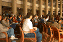

Pictures from Steve Wozniak's 1995 Keynote address
Dave was ready with all the sound gear.
Alan "there is no" Braverman had to stall due to some problems with feeding
sound over the campus video fiber network. We got it working at the last
second along with our Internet MBONE multicast. Alan had a lot of fun
because he got to say "ass" over the MBONE. (Can I say that over the WWW?)
Jay gets the camera ready. We were recording the talk onto Betacam, SVHS,
and DAT tape. Don't ask... we can't read any of those formats either.
With all the A/V problems solved, our Jonathan Stark, our local chapter
chairperson, makes the introductions.
Wozniak had many things to say about how his childhood helped him
develop his interest in electronics and computers.

It was a very interesting talk. Many people were quite inspired by it.
These days Wozniak teaches computer skills to 5th graders in the pubilc
schools in his area.
Jonathan presents Woz with a plaque and an ACM@UIUC coffee mug.
Steve comments: "The coffee mug will get used. It will be put around the
office or around the house, and each time I use it I'll remember where it
came from and the great people I met there. These (holding up plaque) usually
end up in a box."

{kind=link}
{kind=link}
{kind=link}
{kind=link}
{kind=link}
{kind=link}
{kind=link}
{kind=link}
{kind=link}
{kind=link}